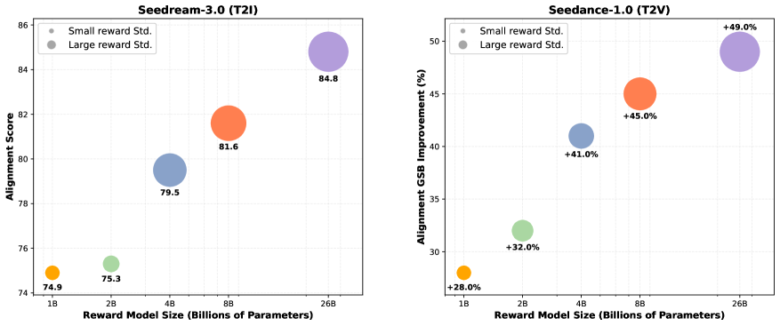
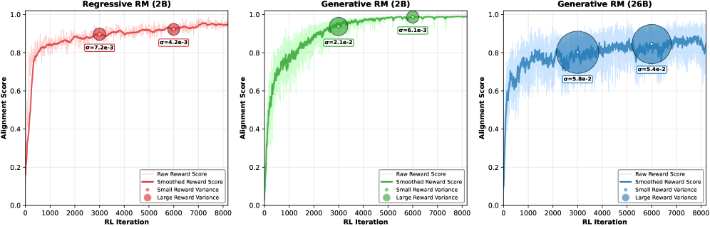
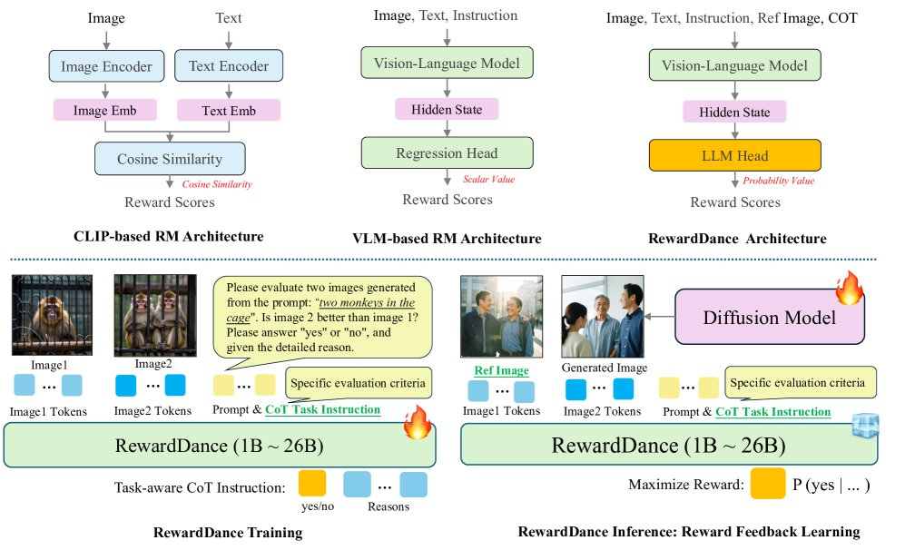
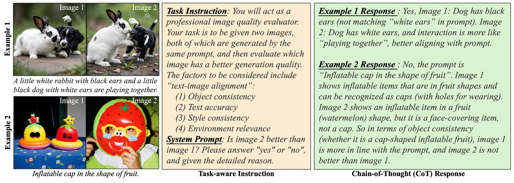
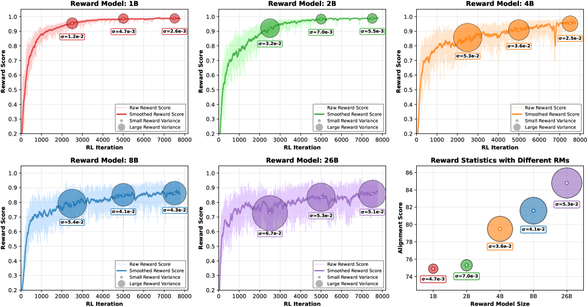
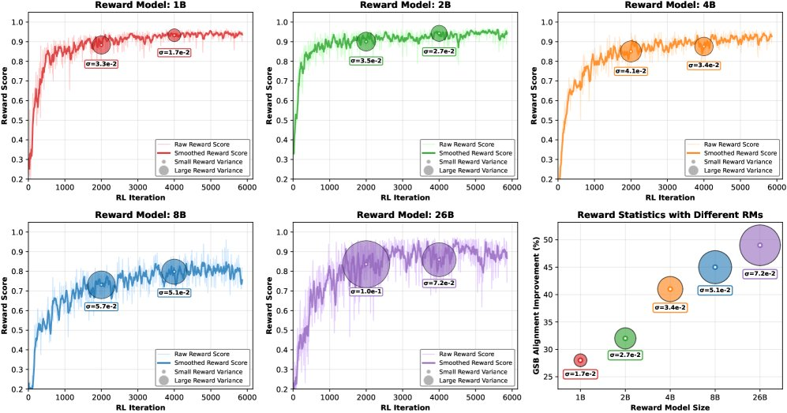
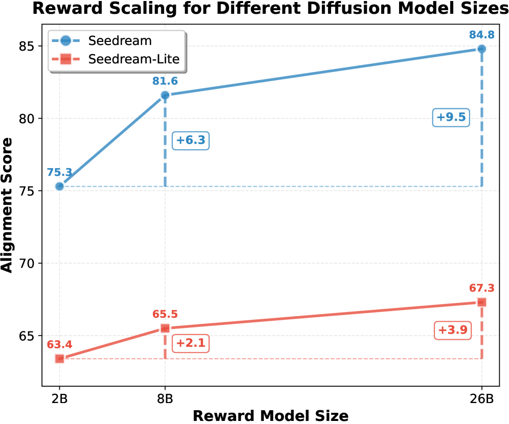
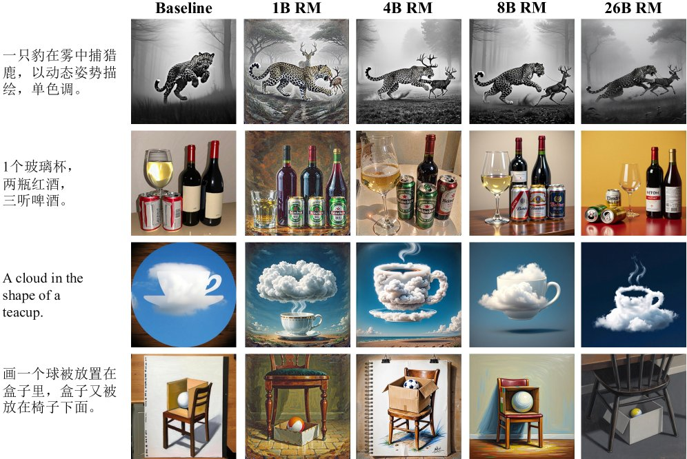
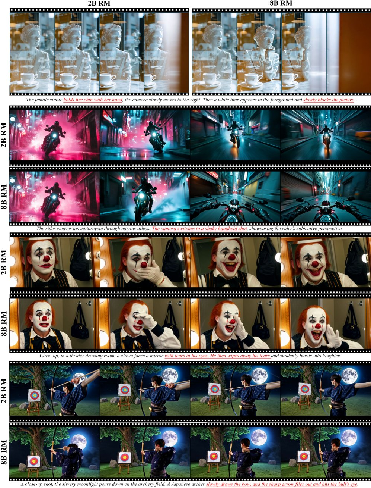

RewardDance: Reward Scaling in Visual Generation
]ByteDance Seed \contribution[*]Equal contribution \contribution[‡]Corresponding authors \contribution[†]Project lead
]字节跳动 Seed \contribution[*]同等贡献 \contribution[‡]通讯作者 \contribution[†]项目负责人
Reward Models (RMs) are critical for improving generation models via Reinforcement Learning (RL), yet the RM scaling paradigm in visual generation remains largely unexplored. It primarily due to fundamental limitations in existing approaches: CLIP-based RMs suffer from architectural and input modality constraints, while prevalent Bradley-Terry losses are fundamentally misaligned with the next-token prediction mechanism of Vision-Language Models (VLMs), hindering effective scaling. More critically, the RLHF optimization process is plagued by Reward Hacking issue, where models exploit flaws in the reward signal without improving true quality. To address these challenges, we introduce RewardDance, a scalable reward modeling framework that overcomes these barriers through a novel generative reward paradigm. By reformulating the reward score as the model’s probability of predicting a "yes" token, indicating that the generated image outperforms a reference image according to specific criteria – RewardDance intrinsically aligns reward objectives with VLM architectures. This alignment unlocks scaling across two dimensions: (1) Model Scaling: Systematic scaling of RMs up to 26 billion parameters; (2) Context Scaling: Integration of task-specific instructions, reference examples, and chain-of-thought (CoT) reasoning. Extensive experiments demonstrate that RewardDance significantly surpasses state-of-the-art methods in text-to-image, text-to-video, and image-to-video generation. Crucially, we resolve the persistent challenge of "reward hacking": Our large-scale RMs exhibit and maintain high reward variance during RL fine-tuning, proving their resistance to hacking and ability to produce diverse, high-quality outputs. It greatly relieves the mode collapse problem that plagues smaller models.

图 1：RewardDance 持续提升 T2I 与 T2V 生成效果（以对齐分数/GSB 验证）。RL 训练后期阶段的奖励方差（以气泡大小表示）可作为策略“破解”的指示：方差低意味着模式坍塌，即模型倾向于生成单一的高奖励输出；方差高则表明策略在不同提示词下保持了输出多样性，即尚未坍塌。
Diffusion models have achieved immense progress in visual generation. State-of-the-art models such as FLUX [26] and Seedream [16, 14] for image generation, alongside Wan2.1 [56] and Seedance [15] for video generation, have unlocked vast creative potential. These capabilities are further enhanced by paradigms like Reinforcement Learning (RL) [55, 11, 13, 20, 67, 34, 28, 29, 18] and Test-time Scaling [39], where the Reward Model (RM) plays a pivotal role. While a robust and accurate RM can significantly improve generation quality, the community has lacked clear guidance on designing superior RMs. In this paper, we introduce RewardDance, a new framework built on the principle that scalability is the key to creating better visual RMs.
扩散模型在视觉生成领域取得了巨大进展。图像生成方面以 FLUX [26] 与 Seedream [16, 14] 为代表，视频生成方面以 Wan2.1 [56] 与 Seedance [15] 为代表，这些当前最优模型释放了巨大的创作潜能。强化学习（RL）[55, 11, 13, 20, 67, 34, 28, 29, 18] 与测试时扩展 [39] 等范式进一步增强了这些能力，其中奖励模型（RM）起着关键作用。尽管稳健而准确的奖励模型能显著提升生成质量，学界在设计更优奖励模型方面却一直缺乏清晰指引。本文提出 RewardDance——一个基于“可扩展性是构建更好视觉奖励模型的关键”这一原则的新框架。
| Methods | Task | Aligning Stage | Base Model | Modeling Paradigm | Model Scaling | Context Scaling | ||
| Task Instruction | Reference Examples | CoT Data | ||||||
| ImageReward [64] | Visual | RL | CLIP | Regressive | ||||
| PickScore [23] | Visual | RL | CLIP | Regressive | ||||
| HPSv2 [63] | Visual | RL | CLIP | Regressive | ||||
| VisionReward [65] | Visual | RL | VLM | Regressive | ||||
| VideoAlign [35] | Visual | RL | VLM | Regressive | ||||
| HPSv3 [40] | Visual | RL&Infer | VLM | Regressive | ||||
| WorldPM [57] | Understanding | RL | VLM | Regressive | ||||
| DeepSeek-GRM [36] | Understanding | Infer | VLM | Generative | ||||
| Pairwise RM [66] | Understanding | RL | VLM | Generative | ||||
| UnifiedReward [59] | Multimodal | - | VLM | Generative | ||||
| RewardDance | Visual | RL&Infer | VLM | Generative | ||||
表 1：视觉与多模态奖励模型的综合对比。我们的 RewardDance 是首个在视觉生成领域成功将生成式范式与全面的可扩展性相结合的框架，其扩展性同时覆盖奖励模型规模与奖励上下文两个维度（任务指令、参考示例与 CoT 数据）。
Our work is motivated by a comprehensive analysis of existing reward modeling methods, as summarized in Table 1. Early CLIP-based reward models [64, 63] were limited by CLIP’s architecture, which was difficult to scale [31] and generalized poorly to diverse tasks [30]. Later VLM-based models explored new paradigms and scaling strategies, but progress has been fragmented: some achieve large-scale models yet remain limited to regressive paradigms (e.g., HPSv3 [40] , WorldPM [57]), while others adopt stronger generative paradigms without effective scaling (e.g., UnifiedReward [59]). As shown in the Figure 2 , the regression-based reward model is very susceptible to reward hacking.
我们的工作源于对现有奖励建模方法的全面分析，结果汇总于表 1。早期的 CLIP 类奖励模型 [64, 63] 受限于 CLIP 的架构——既难以扩展 [31]，又难以泛化到多样化任务 [30]。后续基于视觉语言模型（VLM）的方法探索了新的范式与扩展策略，但进展彼此割裂：有的实现了大规模模型，却仍局限于回归式范式（如 HPSv3 [40]、WorldPM [57]）；有的采用了更强的生成式范式，却没有实现有效扩展（如 UnifiedReward [59]）。如图 2 所示，基于回归的奖励模型极易受到奖励破解的影响。

图 2：扩散模型 RL 微调过程中回归式与生成式奖励模型的训练动态对比。在相同的 2B 模型规模下（左图与中图对比），生成式奖励模型的训练动态明显优于回归式：它带来更高的探索幅度，表现为更大的奖励方差，以及更有利的奖励增长趋势。奖励信号更高的多样性说明生成式奖励模型对奖励破解具有更强的鲁棒性。而在基于回归的奖励模型下，扩散模型有可能学会利用奖励漏洞刷高分数，却并不带来实质性进步。这种内在的鲁棒性，正是生成式奖励模型成功扩展至 26B 参数的关键（右图）。
We introduce RewardDance to address above challenges. It represents the first framework designed to achieve this unification, leveraging a generative paradigm that enables effective scaling across both model size and context—including task-specific instructions, reference examples, and Chain-of-Thought (CoT) reasoning—to unlock the full potential of VLMs for advanced visual reward modeling.
我们提出 RewardDance 以应对上述挑战。它是首个为实现这种统一而设计的框架，利用生成式范式在模型规模与上下文两个维度上实现有效扩展——上下文扩展包括任务专属指令、参考示例与思维链（CoT）推理——从而释放 VLM 在高级视觉奖励建模中的全部潜力。
Our RewardDance framework resolves this fundamental paradigm mismatch by rethinking reward modeling as a generative task. Instead of appending a regression head, we convert the reward score into the VLM’s predicted probability of a "yes" token. This approach natively aligns the reward objective with the VLM’s autoregressive, next-token prediction mechanism, thereby enabling effective reward scaling along two primary dimensions:
RewardDance 框架通过把奖励建模重新定义为一项生成式任务，解决了这一根本性的范式错位。我们不再外挂一个回归头，而是把奖励分数转化为 VLM 对“yes”词元的预测概率。这一做法使奖励目标与 VLM 自回归的下一词元预测机制天然对齐，从而在两个主要维度上实现有效的奖励扩展：
Model Scaling: We break from the conventional practice of using smaller, fixed-size models by systematically scaling our RM with VLMs of increasing capacity (1B to 26B parameters). This directly links model parameter count to both reward modeling performance and final generation quality.
• 模型扩展：我们打破了使用小型固定规模模型的传统做法，系统地用容量递增的 VLM（1B 至 26B 参数）扩展我们的奖励模型。这直接把模型参数量与奖励建模性能以及最终生成质量关联起来。
Context Scaling: In contrast to traditional methods that rely on simple image-text pairs, RewardDance enriches input context by incorporating task-aware instructions, reference examples, and CoT reasoning data, enabling more robust and accurate reward judgments.
• 上下文扩展：与依赖简单图文对的传统方法不同，RewardDance 通过引入任务感知指令、参考示例与 CoT 推理数据来丰富输入上下文，从而实现更稳健、更准确的奖励判断。
To validate RewardDance, we conducted extensive experiments on both open-source and proprietary models across a range of tasks, including text-to-image, text-to-video, and image-to-video generation. We observed that as the parameter of the Reward Model (RM) increases, the diffusion model exhibits stronger exploratory capacity at higher RLHF iteration steps and is less susceptible to reward hacking. Moreover, incorporating additional context information significantly enhances model performance and robustness. Crucially, our findings reveal a pronounced scaling effect: under both RL and test-time scaling paradigms, visual generation quality consistently and stably improves in direct correspondence with reward model enhancement.
为验证 RewardDance，我们在开源与自研模型上、跨越文本到图像、文本到视频与图像到视频等一系列任务开展了大量实验。我们观察到，随着奖励模型（RM）参数量增加，扩散模型在更高 RLHF 迭代步数下展现出更强的探索能力，且更不易受到奖励破解的影响。此外，引入更多上下文信息显著提升了模型性能与鲁棒性。关键在于，我们发现了一个显著的扩展效应：在 RL 与测试时扩展两种范式下，视觉生成质量都随奖励模型的增强而持续、稳定地提升。
Our contributions are summarized as:
我们的贡献总结如下：
Scalability as the Principle for RMs: We establish scalability as the fundamental design principle for visual RMs, addressing a critical yet underexplored dimension in existing work and providing new insights for the field. More importantly, our experiments demonstrate that scaling up the Reward Model (RM) enables less reward hacking (Fig. 2) and further achieves significant improvements in generation quality (Fig. 1).
• 以可扩展性作为奖励模型的设计原则：我们确立可扩展性为视觉奖励模型的基本设计原则，回应了现有工作中一个关键却鲜有探索的维度，为该领域提供了新的洞见。更重要的是，我们的实验表明，扩大奖励模型（RM）规模能减少奖励破解（图 2），并进一步带来生成质量的显著提升（图 1）。
Generative Reward Modeling: We propose a novel generative reward modeling paradigm that resolves the fundamental mismatch in prior work by regarding reward prediction as a next-token prediction task. This naturally aligns with VLMs’ autogressive mechanism, unlocking the potential for effective reward scaling.
• 生成式奖励建模：我们提出一种全新的生成式奖励建模范式，把奖励预测视为下一词元预测任务，从而解决了已有工作中的根本性错位。它与 VLM 的自回归机制天然契合，释放了有效奖励扩展的潜力。
Comprehensive Reward Scaling: We propose and validate a holistic methodology for scaling RMs across two dimensions: reward model size (from 1B to 26B parameters) and reward context (including task-aware instructions, reference examples, and CoT reasoning). We are the first to systematically demonstrate that enhancing these dimensions yields stable and consistent scaling effects, where improved reward models directly contribute to higher-quality visual generation.
• 全面的奖励扩展：我们提出并验证了一套在两个维度上扩展奖励模型的整体方法——奖励模型规模（从 1B 到 26B 参数）与奖励上下文（包括任务感知指令、参考示例与 CoT 推理）。我们首次系统证明，增强这两个维度能产生稳定而一致的扩展效应，即更好的奖励模型直接带来更高质量的视觉生成。
Generalized diffusion models encompass both traditional diffusion processes [52, 21, 53] and flow-based models [33]. These methods learn to map a simple prior distribution, typically a Gaussian, to a target data distribution by reversing a learned noise-injection process. Owing to their effectiveness in modeling complex, high-dimensional data, diffusion models have demonstrated remarkable performance across a wide range of tasks, including image [49, 44, 12, 16, 26, 14, 32, 71] and video [4, 19, 6, 1, 15, 51, 69, 25, 56, 38, 70, 8] generation.
广义的扩散模型既涵盖传统的扩散过程 [52, 21, 53]，也包括基于流的模型 [33]。这类方法通过学习逆转一个已习得的加噪过程，把简单先验分布（通常为高斯分布）映射到目标数据分布。凭借在复杂高维数据建模上的有效性，扩散模型在图像 [49, 44, 12, 16, 26, 14, 32, 71] 与视频 [4, 19, 6, 1, 15, 51, 69, 25, 56, 38, 70, 8] 生成等广泛任务上表现出色。
Reward Models (RMs) play a pivotal role in aligning the outputs of visual generation models with human preferences [48, 71, 15, 16, 14]. Early approaches, such as ImageReward [64], PickScore [23], and HPSv2 [63], fine-tuned CLIP models to produce scores that reflect human preferences. Subsequent works [65, 35] adopted Vision-Language Models (VLMs) as backbones, typically appending a regression head to output reward signals. These methods, predominantly trained with the Bradley–Terry loss [5, 43, 72], are categorized as regression-based RMs. More recently, advancements in LLMs and multimodal learning have inspired new paradigms. For instance, WorldPM [57] investigated the scaling potential of RMs through enhanced data and model architectures. Concurrently, a new class of generative reward models was proposed [36, 66, 59], aiming to better leverage the native capabilities of pre-trained models. Building upon these developments, our work introduces the generative RM paradigm to the visual domain and, for the first time, systematically explores its scaling properties with respect to both reward model size and reward context.
奖励模型（RM）在使视觉生成模型的输出与人类偏好对齐方面起着关键作用 [48, 71, 15, 16, 14]。早期方法（如 ImageReward [64]、PickScore [23] 与 HPSv2 [63]）通过微调 CLIP 模型来产出反映人类偏好的分数。后续工作 [65, 35] 采用视觉语言模型（VLM）作为骨干网络，通常外挂一个回归头以输出奖励信号。这些方法主要用 Bradley–Terry 损失 [5, 43, 72] 训练，被归为基于回归的奖励模型。近来，大语言模型与多模态学习的进展催生了新的范式。例如，WorldPM [57] 通过增强数据与模型架构研究了奖励模型的扩展潜力；与此同时，一类新的生成式奖励模型被提出 [36, 66, 59]，旨在更好地利用预训练模型的原生能力。在这些进展之上，我们把生成式奖励模型范式引入视觉领域，并首次系统探索其在奖励模型规模与奖励上下文两方面的扩展性质。
Reinforcement Learning from Human Feedback (RLHF) has been increasingly adopted in diffusion models to align generated outputs with human preferences. The typical pipeline involves training a reward model on human preference data and leveraging it to guide the generative model. For instance, DDPO [3] adapts Proximal Policy Optimization (PPO) to diffusion frameworks by computing image log-likelihoods. In contrast, ReFL [64] circumvents likelihood computation challenges by directly optimizing diffusion outputs through gradients from a frozen reward model. Beyond diffusion models, recent works [68, 67, 34, 35] have extended RLHF techniques to flow-based generative models, demonstrating the broader applicability of preference-based optimization in generative modeling. Complementing training-time alignment methods, test-time optimization techniques have emerged to enhance diffusion model performance during inference without requiring model retraining. These approaches [39, 42, 35] typically involve reward-guided adjustments to noise prediction outputs or dynamic modifications to sampling schedules, thereby improving generation quality in a plug-and-play manner. In this work, we integrate our RewardDance framework into both reinforcement learning and inference-time optimization stages, demonstrating its effectiveness in aligning generated content with human preferences across diverse visual generation tasks.
基于人类反馈的强化学习（RLHF）在扩散模型中得到越来越多的应用，用以使生成输出与人类偏好对齐。典型流程是先在人类偏好数据上训练一个奖励模型，再用它指导生成模型。例如，DDPO [3] 把近端策略优化（PPO）适配到扩散框架中，通过计算图像对数似然实现；相比之下，ReFL [64] 通过冻结的奖励模型提供梯度直接优化扩散输出，绕开了似然计算的难题。除扩散模型外，近期工作 [68, 67, 34, 35] 把 RLHF 技术拓展到基于流的生成模型，展示了基于偏好的优化在生成建模中的广泛适用性。作为训练时对齐方法的补充，测试时优化技术也已出现，可在无需重新训练模型的前提下提升扩散模型的推理表现。这类方法 [39, 42, 35] 通常对噪声预测输出作奖励引导的调整，或动态修改采样调度，从而以即插即用的方式改善生成质量。本文把 RewardDance 框架同时集成到强化学习与推理时优化两个阶段，证明其在多样化的视觉生成任务中能有效使生成内容与人类偏好对齐。
This section introduces RewardDance, our framework for scalable visual reward modeling. We first detail its core generative paradigm, then describe our methodologies for scaling it along two primary dimensions: context and model size. Finally, we outline the training pipeline in aligning diffusion models.
本节介绍 RewardDance——我们用于可扩展视觉奖励建模的框架。我们先详述其核心的生成式范式，随后介绍沿上下文与模型规模两个主要维度扩展它的方法，最后概述对齐扩散模型的训练流程。
As illustrated in Figure 3 (top panel), conventional reward modeling approaches follow a pointwise regressive paradigm. The term "pointwise" indicates that these RMs evaluate individual images independently, while "regressive" refers to the scalar reward prediction mechanism. This paradigm encompasses both CLIP-based models, which compute rewards through cosine similarity between CLIP image and text embeddings, and VLM-based approaches, which typically employ additional regression heads to map VLM hidden states to scalar reward values. These models are commonly optimized using preference pairs with the Bradley-Terry (BT) loss:
如图 3（上图）所示，传统的奖励建模方法遵循逐点式回归范式。“逐点式”指这些奖励模型独立评估单幅图像，“回归式”指其以标量形式预测奖励。该范式既包括基于 CLIP 的模型（通过计算 CLIP 图像嵌入与文本嵌入之间的余弦相似度得到奖励），也包括基于 VLM 的方法（通常额外使用回归头，把 VLM 隐状态映射为标量奖励值）。这些模型通常使用偏好对与 Bradley-Terry（BT）损失进行优化：
| (1) |
where is the input prompt, and are the chosen (better) and rejected (worse) images, is the reward model, and is the sigmoid function. These approaches ultimately provide reward signals to optimize diffusion models through reward-based feedback learning.
其中 为输入提示词， 与 分别为被选中（更优）与被拒绝（更差）的图像， 为奖励模型， 为 sigmoid 函数。这些方法最终通过基于奖励的反馈学习为优化扩散模型提供奖励信号。
However, this regressive paradigm suffers from fundamental limitations. CLIP-based approaches are constrained by their dual-encoder architecture and single-modality design, which impose inherent scalability bottlenecks. For VLM-based models, the regression head introduces a critical paradigm mismatch with the model’s native next-token prediction ability. Collectively, these limitations prevent full utilization of pre-trained knowledge and fundamentally restrict effective scaling across both reward context and model size dimensions.
然而，这种回归式范式存在根本局限。基于 CLIP 的方法受其双编码器架构与单一模态设计的制约，存在固有的可扩展性瓶颈；而对基于 VLM 的模型而言，回归头与模型原生的下一词元预测能力之间存在严重的范式错位。这些局限共同阻碍了对预训练知识的充分利用，并从根本上限制了在奖励上下文与模型规模两个维度上的有效扩展。
To address the limitations of conventional regressive reward modeling, we introduce RewardDance, a novel framework designed for scalable visual reward modeling. Our approach centers on a generative paradigm that regards reward modeling as a token generation task, naturally aligning with the native capabilities of modern VLMs. This core innovation enables systematic exploration of scalability along two primary dimensions: Model Scaling and Context Scaling. As shown in Figure 3 (bottom panel), our RewardDance framework supports models ranging from 1B to 26B parameters. The framework operates through two main stages: (1) RewardDance Training: where we train the reward model on task-aware Chain-of-Thought (CoT) instruction data, and (2) RewardDance Inference: where the trained reward model provides feedback signals to optimize diffusion models through reward feedback learning.
为克服传统回归式奖励建模的局限，我们提出 RewardDance——一个面向可扩展视觉奖励建模的新框架。我们的方法以生成式范式为核心，把奖励建模视为一项词元生成任务，从而与当代 VLM 的原生能力天然契合。这一核心创新使我们得以沿模型扩展与上下文扩展两个主要维度系统探索可扩展性。如图 3（下图）所示，RewardDance 框架支持 1B 至 26B 参数规模的模型。该框架包含两个主要阶段：(1) RewardDance 训练：在任务感知的思维链（CoT）指令数据上训练奖励模型；(2) RewardDance 推理：由训练好的奖励模型提供反馈信号，通过奖励反馈学习优化扩散模型。

图 3：RewardDance 框架概览及与现有奖励模型架构的对比。（上）已有工作使用基于 CLIP 或基于 VLM 的奖励模型，为扩散模型训练提供标量奖励分数。（下）我们的 RewardDance 方法（1B 至 26B 参数）使用任务感知的 CoT 指令进行带推理的奖励建模。红色火焰表示可训练组件，蓝色冰块表示冻结参数。
We scale the context of our reward model beyond simple image-prompt pairs by incorporating three key elements: task-aware instructions, reference images, and Chain-of-Thought (CoT) reasoning.
我们通过引入三个关键要素——任务感知指令、参考图像与思维链（CoT）推理——把奖励模型的上下文从简单的图像-提示词对扩展开来。
First, we regard the reward scoring problem as a comparative judgment task as shown in Figure 3 (bottom left). The model’s input consists of image1 tokens , image2 tokens , prompt , and CoT task instruction . The task instruction guides the model to evaluate whether one image is superior to the other based on a set of predefined criteria. The model is then trained to predict the next token with "yes" or "no". In practice, the reward score is the predicted probability of the "yes" token:
首先，我们把奖励打分问题视为一项比较判断任务，如图 3（左下）所示。模型的输入由图像 1 词元 、图像 2 词元 、提示词 与 CoT 任务指令 构成。任务指令引导模型依据一组预定义准则判断一幅图像是否优于另一幅，模型则被训练为预测下一个词元为“yes”或“no”。在实践中，奖励分数即为“yes”词元的预测概率：
| (2) |
where is the probability distribution from our VLM-based reward model, RewardDance.
其中 是来自我们基于 VLM 的奖励模型 RewardDance 的概率分布。
To further scale the context and enhance the RM’s reasoning capabilities, we train it to generate a rationale for its decision in a Chain-of-Thought (CoT) manner. As illustrated in the Figure 3, the model outputs both "yes/no" and "Reasons" tokens. We construct two data formats for this: one where the model outputs the "yes/no" decision before the reasoning, and another where it generates the reasoning first and concludes with the decision. This detailed reasoning data, distilled from a powerful teacher model (SEED-VL 1.5), not only improves performance but also makes the reward judgments interpretable. For efficiency during the feedback alignment stage (bottom right in the Figure 3), we employ the first format and derive the reward signal by maximizing the probability of the "yes" token: to optimize the diffusion model.
为进一步扩展上下文、增强奖励模型的推理能力，我们训练它以思维链（CoT）的方式为自身决策生成理由。如图 3 所示，模型同时输出“yes/no”与“理由”词元。我们为此构造了两种数据格式：一种是模型先输出“yes/no”判断、再给出推理；另一种是先生成推理、最后给出判断。这些细致的推理数据从一个强大的教师模型（SEED-VL 1.5）蒸馏而来，既提升了性能，也使奖励判断具备可解释性。出于反馈对齐阶段（图 3 右下）的效率考虑，我们采用第一种格式，并通过最大化“yes”词元的概率 来得到奖励信号，用以优化扩散模型。
Figure 4 provides a concrete illustration of two COT examples in RM training process. It consist of a prompt , two images for comparison (Image 1 and Image 2) , a task-aware instruction, a "yes/no" judgment and a Chain-of-Thought (CoT) response to elaborate on the detailed reasoning. This structure, which combines instructions, comparative judgment, and detailed reasoning, greatly enriches the reward model’s training context, allowing it to move beyond simple text-image matching to achieve more precise and interpretable evaluations.
图 4 具体展示了奖励模型训练过程中两个 CoT 示例。每条示例由提示词、用于比较的两幅图像（图像 1 与图像 2）、任务感知指令、“yes/no”判断，以及一段详述推理过程的思维链（CoT）回复构成。这种把指令、比较判断与细致推理结合起来的结构，极大地丰富了奖励模型的训练上下文，使其得以超越简单的图文匹配，实现更精确、更可解释的评估。

图 4：用于训练 RewardDance 模型的任务感知指令与 CoT 回复示例。
To investigate the effects of model scale, we systematically scale our reward model using variants of the InternVL [10] architecture, ranging from 1B to 26B parameters. Our experiments reveal a strong positive correlation between the reward model’s parameter count and the final quality of generated outputs, demonstrating that larger reward models yield superior reward evaluation performance and enhanced generation quality.
为考察模型规模的影响，我们使用 InternVL [10] 架构的多个变体系统地扩展奖励模型，参数量覆盖 1B 到 26B。实验揭示了奖励模型参数量与最终生成质量之间的强正相关，表明更大的奖励模型能带来更优的奖励评估性能与更高的生成质量。
Pointwise Generative Variant: While our primary reference (pairwise) generative reward paradigm requires reference images for reward prediction, we also design a pointwise generative variant. This variant receives only prompts and generated images, incorporating additional instructions typically used to evaluate whether generated results meet high-quality standards. The reward value is measured by the probability of the "yes" token. During training, we employ Bradley-Terry loss for preference pairs. To facilitate better model convergence, we add a weighted cross-entropy (CE) loss with a small coefficient, assigning "yes" labels to preferred samples and "no" labels to rejected samples.
逐点式生成变体：我们的主要（成对式）生成奖励范式需要参考图像才能预测奖励，但我们也设计了一个逐点式生成变体。该变体只接收提示词与生成图像，并加入通常用于评估生成结果是否达到高质量标准的额外指令；奖励值由“yes”词元的概率度量。训练时，我们对偏好对采用 Bradley-Terry 损失。为促进模型更好地收敛，我们额外加入一个系数较小的加权交叉熵（CE）损失，把“yes”标签赋给偏好样本、把“no”标签赋给被拒绝样本。
For Reinforcement Learning (RL)-based fine-tuning, we adopt the ReFL algorithm [64]. Our generative reward model, RewardDance, provides crucial preference signals. Since our model operates comparatively, we utilize a Best-of-N (BoN) sampling strategy to establish high-quality references for each prompt. Specifically, we first generate N candidate images using the SFT model. RewardDance then performs pairwise comparisons among candidates to identify the top-ranked image, which serves as a reference in subsequent fine-tuning steps. We explore different strategies for selecting reference images based on win counts, with detailed experiments presented in Section 4.4.
在基于强化学习（RL）的微调中，我们采用 ReFL 算法 [64]。我们的生成式奖励模型 RewardDance 提供关键的偏好信号。由于我们的模型以比较方式运作，我们采用 Best-of-N（BoN）采样策略，为每条提示词建立高质量参考。具体地，我们先用 SFT 模型生成 N 幅候选图像，再由 RewardDance 在候选之间做两两比较，找出排名最高的图像，作为后续微调步骤中的参考。我们探索了基于胜出次数选取参考图像的不同策略，详细实验见第 4.4 节。
To further enhance inference-time performance, we implement a Search over Paths approach [36]. This strategy works by pruning a search space of multiple generation paths to select the most promising trajectories. The process begins by initializing N distinct sampling trajectories from different noise vectors. During ODE sampling, these trajectories are iteratively extended using a re-noising and re-sampling mechanism. Specifically, a verifier (our RewardDance) prunes the search space at each step by selecting the most promising trajectories. For this verification role, we deploy a computationally efficient point-wisee generative variant of our model. This lightweight variant is optimized for speed by omitting reference images and evaluating individual candidate images based solely on task instructions.
为进一步提升推理时的表现，我们实现了一种路径搜索（Search over Paths）方法 [36]。该策略通过在多条生成路径构成的搜索空间中剪枝，选出最具希望的轨迹。流程上，先从不同的噪声向量初始化 N 条互不相同的采样轨迹；在 ODE 采样过程中，通过再噪声化与再采样机制迭代地延长这些轨迹。具体地，由一个验证器（我们的 RewardDance）在每一步通过选择最具希望的轨迹来剪枝搜索空间。在这一验证角色上，我们部署了计算高效的逐点式生成变体。该轻量变体省略参考图像、仅依据任务指令评估单个候选图像，从而针对速度做了优化。
In this section, we present a comprehensive evaluation of RewardDance on both text-to-image, text-to-video and image-to-video tasks. We analyze the impact of reward model scaling, inference-time scaling and various architectural choices through detailed experimental results and ablation studies.
本节给出 RewardDance 在文本到图像、文本到视频与图像到视频任务上的全面评估。我们通过详细的实验结果与消融研究，分析奖励模型扩展、推理时扩展以及各类架构选择的影响。
Image Baselines. Our primary baselines include representative state-of-the-art (SOTA) models from academia (e.g., LlamaGen [54], SD-v [49], PixArt- [7], SD-v [49], DALL-E [45], Emu-Gen [58], SDXL [44], DALL-E [2], SD-v3 [12] and FLUX.1-dev [27]) and industry (e.g., Luma [37], Ideogram [22], Midjourney V6.1 [41], DALLE-3 [2], FLUX1.1 [27], Hunyuan [25] , Imagen 3, Recraft [47]s, Seedream 2.0 [16] and Qwen-Image [61]).
图像基线。我们的主要基线包括学术界代表性的当前最优（SOTA）模型（如 LlamaGen [54]、SD-v [49]、PixArt- [7]、SD-v [49]、DALL-E [45]、Emu-Gen [58]、SDXL [44]、DALL-E [2]、SD-v3 [12] 与 FLUX.1-dev [27]），以及工业界模型（如 Luma [37]、Ideogram [22]、Midjourney V6.1 [41]、DALLE-3 [2]、FLUX1.1 [27]、Hunyuan [25]、Imagen 3、Recraft [47]s、Seedream 2.0 [16] 与 Qwen-Image [61]）。
Video Baselines. We compare our model with SOTA industry products, e.g., Kling 2.1 Master [24], Veo-3.0 [17], Kling 2.0 Master [24], Veo-2.0 [17], Wan 2.1 [56], Sora [6], RunwayGen 4 [50].
视频基线。我们与工业界的 SOTA 产品对比，例如 Kling 2.1 Master [24]、Veo-3.0 [17]、Kling 2.0 Master [24]、Veo-2.0 [17]、Wan 2.1 [56]、Sora [6]、RunwayGen 4 [50]。
Image Evaluation Benchmarks. We adopt Bench-240, the evaluation prompts utilized in Seedream 2.0 and Seedream 3.0. This comprehensive set of 240 prompts is constructed by integrating representative prompts from publicly available benchmarks with manually curated examples. The prompt distribution is rigorously calibrated based on extensive user preference surveys. The maximum score for Bench-240 is 100 points.
图像评测基准。我们采用 Bench-240，即 Seedream 2.0 与 Seedream 3.0 所使用的评测提示词集。这套包含 240 条提示词的综合集合，由公开基准中的代表性提示词与人工筛选的示例整合而成，其提示词分布依据大规模用户偏好调研作了严格校准。Bench-240 的满分为 100 分。
Video Evaluation Benchmarks. For a comprehensive evaluation of video generation models across diverse scenarios, we utilize SeedVideoBench-1.0, introduced in Seedance 1.0. It comprises 300 prompts applicable to both text-to-video and image-to-video tasks, covering a wide spectrum of application domains. The taxonomy for the image-to-video task aligns with that of text-to-video, augmented with detailed annotations for the initial frame.
视频评测基准。为全面评估视频生成模型在多样化场景下的表现，我们使用 Seedance 1.0 中提出的 SeedVideoBench-1.0。它包含 300 条同时适用于文本到视频与图像到视频任务的提示词，覆盖广泛的应用领域；图像到视频任务的分类体系与文本到视频一致，并额外补充了首帧的细致标注。
Image Metrics. For all text-to-image experiments, we adopt the image-text alignment score from [14]. This metric involves human evaluators to verify whether the generated images correctly depict the key elements described in the prompts.
图像指标。在所有文本到图像实验中，我们采用文献 [14] 提出的图文对齐分数。该指标由人类评估者核验生成的图像是否正确呈现了提示词所描述的关键要素。
Video Metrics. For text-to-video and image-to-video evaluation, we use the human preference-based Good-Same-Bad (GSB) score. Here, G, S, and B represent the counts of "Good," "Same," and "Bad" judgments, respectively. The final GSB score is defined as:
视频指标。在文本到视频与图像到视频的评测中，我们使用基于人类偏好的 Good-Same-Bad（GSB）分数。其中 G、S、B 分别表示“更好”“相当”“更差”三类判断的计数。最终的 GSB 分数定义为：
| (3) |
To enable performance comparison with industry products, we developed the Video-Text Alignment Score. The scoring rubric is defined as follows: 0 indicates a complete mismatch between the video content and the text description; 1 indicates a partial match; and 2 indicates a perfect match.
为便于与工业界产品做性能对比，我们提出了 Video-Text Alignment Score（视频-文本对齐分数）。评分规则如下：0 表示视频内容与文本描述完全不符，1 表示部分匹配，2 表示完全匹配。
Image Generation. As demonstrated in Table 2, deploying and scaling RewardDance delivers substantial performance improvements across both RL fine-tuning and test-time scaling paradigms. For RL fine-tuning, scaling the RM from 1B to 26B parameters significantly enhances FLUX.1-dev performance from 67.0 to 73.6. This scaling effect becomes even more pronounced with Seedream-3.0, where scores dramatically increase from a baseline of 74.1 to an impressive 84.8 using the 26B RM. A consistent scaling trend emerges for test-time scaling with Seedream-3.0, with performance steadily climbing from 74.1 to 80.5. This robust correlation across diverse base models and optimization paradigms confirms that larger VLM-based reward models more effectively capture human preferences, thereby guiding diffusion models toward superior output quality.
图像生成。如表 2 所示，部署并扩展 RewardDance 在 RL 微调与测试时扩展两种范式下都带来了显著的性能提升。在 RL 微调方面，把奖励模型从 1B 扩展到 26B 参数，使 FLUX.1-dev 的性能从 67.0 大幅提升至 73.6。这一扩展效应在 Seedream-3.0 上更为显著：使用 26B 奖励模型时，分数从 74.1 的基线跃升至 84.8。在 Seedream-3.0 的测试时扩展中也呈现出一致的扩展趋势，性能从 74.1 稳步攀升至 80.5。这种跨不同基座模型与优化范式的一致相关性印证了：更大的基于 VLM 的奖励模型能更有效地捕捉人类偏好，从而引导扩散模型产出更高质量的结果。
| Stage | Metric | Base Model | No RM | 1B RM | 2B RM | 4B RM | 8B RM | 26B RM |
| RM Training | RM ID Accuracy (%) | RewardDance | – | 64.70 | 69.36 | 65.37 | 74.92 | 78.44 |
| RM Training | RM OOD Accuracy (%) | RewardDance | – | 69.10 | 69.59 | 71.92 | 71.94 | 80.90 |
| RL Fine-tuning | Alignment Score | FLUX.1-dev | 67.0 | |||||
| Alignment Score | Seedream-3.0-SFT | 74.1 | ||||||
| Test-Time Scaling | Alignment Score | Seedream-3.0-SFT | 74.1 |
表 2：奖励模型（RM）扩展对 RM 准确率与最终文本到图像对齐分数的影响。随着 RM 规模及其相应准确率的提升，扩散模型在 RL 与测试时扩展下的性能均持续改善。
Furthermore, we constructed two evaluation datasets: In-Domain (ID) preference dataset contains 2,500 sample pairs. This dataset was constructed by partitioning a subset of data points from the Stage 2 training set of RewardDance that were held out and unseen during training. Out-Of-Domain (OOD) preference dataset contains over 4,000 sample pairs. This dataset was curated by sampling from public benchmark datasets, including ImageReward [64] and HPS [62], to assess the model’s generalization capability on out-of-distribution samples.
此外，我们构建了两个评测数据集：域内（ID）偏好数据集包含 2,500 个样本对，由从 RewardDance 第二阶段训练集中划分出的、训练时未见过的数据子集构成；域外（OOD）偏好数据集包含 4,000 余个样本对，通过对 ImageReward [64] 与 HPS [62] 等公开基准数据集采样整理而成，用以评估模型在分布外样本上的泛化能力。
As shown in Table 2, we observe no strict positive correlation between the Reward Model (RM) accuracy on the ID dataset and its parameter scale, particularly evident in models with 1B, 2B, and 4B parameters. This finding aligns with existing studies [9, 46, 60], which suggest that higher RM accuracy does not guarantee corresponding improvements in Reinforcement Learning (RL) performance. However, the RM’s accuracy on the OOD dataset – indicative of its generalization capability – can be viewed as a more significant predictor of the final outcome. An RM that demonstrates accurate judgment on unseen distributions and strong generalization capability possesses substantially higher guiding value. Consequently, for evaluating RM efficacy, OOD accuracy (generalization capability) emerges as a more critical core metric than ID accuracy. Building upon this insight, developing evaluation benchmarks that better assess RM generalization constitutes an important direction for future research. This involves enhancing the consistency between the RM evaluation set and the RL test set, as well as integrating sample pairs of varying difficulty levels to enable a more comprehensive assessment of reward model capabilities.
如表 2 所示，我们观察到奖励模型（RM）在 ID 数据集上的准确率与其参数规模之间并无严格的正相关，在 1B、2B 与 4B 参数的模型上尤为明显。这一发现与已有研究 [9, 46, 60] 一致，即更高的 RM 准确率并不保证强化学习（RL）性能有相应提升。然而，RM 在 OOD 数据集上的准确率——反映其泛化能力——可被视为对最终结果更具意义的预测指标。一个在未见过分布上判断准确、泛化能力强的 RM，具有显著更高的指导价值。因此，在评估 RM 有效性时，OOD 准确率（泛化能力）比 ID 准确率更关键，应作为核心指标。基于这一洞见，构建能更好评估 RM 泛化能力的评测基准是未来研究的重要方向，包括增强 RM 评测集与 RL 测试集的一致性，以及纳入不同难度层级的样本对，从而更全面地评估奖励模型的能力。
Video Generation. We demonstrate that the benefits of reward scaling extend seamlessly to video generation tasks, as presented in Table 3. We employ GSB metric for this evaluation. For Seedance-1.0 in the Text-to-Video (T2V) RL setting, RewardDance exhibits a compelling scaling trend: performance improves by +28% with a 1B RM compared to Seedance-1.0-SFT, and progressively increases to an impressive +49% improvement when utilizing the 26B RM. This scaling phenomenon is equally pronounced in the Image-to-Video (I2V) paradigm, where performance gains systematically increase from +29% with the 1B RM to a substantial +47% with the 26B RM. These consistent improvements across both video generation modalities demonstrate the broad applicability and robustness of our RewardDance framework.
视频生成。我们证明奖励扩展的收益可以无缝延伸到视频生成任务，结果见表 3，其中我们采用 GSB 指标。对于文本到视频（T2V）RL 设置下的 Seedance-1.0，RewardDance 呈现出引人注目的扩展趋势：使用 1B 奖励模型时性能相对 Seedance-1.0-SFT 提升 +28%，并逐步上升至使用 26B 奖励模型时的 +49%。这一扩展现象在图像到视频（I2V）范式中同样显著，性能增益从 1B 奖励模型的 +29% 系统性地提升到 26B 奖励模型的 +47%。两种视频生成模态上的一致提升，证明了 RewardDance 框架的广泛适用性与鲁棒性。
| Task | Base Model | No RM | 1B RM | 2B RM | 4B RM | 8B RM | 26B RM |
| T2V RL | Seedance-1.0-SFT | - | +28% | ||||
| I2V RL | Seedance-1.0-SFT | - | +29% |
表 3：视频文本对齐结果（以 GSB 为指标），显示增大奖励模型规模能为 T2V 与 I2V 的 RL 带来相对 SFT 基线显著且一致的性能增益。
To rigorously assess the competitiveness of our framework, we benchmark our RewardDance-optimized models against leading academic and industrial systems on three benchmarks: GenEval, Bench-240, and SeedVideoBench-1.0. As shown in Tables 4, 5, and 6, models enhanced by RewardDance consistently achieve state-of-the-art performance.
为严格评估我们框架的竞争力，我们在 GenEval、Bench-240 与 SeedVideoBench-1.0 三个基准上，把经 RewardDance 优化的模型与学界及工业界的领先系统做了对比。如表 4、5、6 所示，经 RewardDance 增强的模型一致地取得了当前最优性能。
GenEval. As shown in Table 4, models enhanced with RewardDance demonstrate significant superiority across multiple dimensions of text-to-image generation. Seedream-3.0 w RewardDance achieves the top overall score of 0.79, while FLUX.1-dev w RewardDance follows closely at 0.75, outperforming strong baselines like SD3 (0.74). RewardDance confers overall performance gains of +0.10 and +0.09 on Seedream-3.0 w/o RewardDance and FLUX.1-dev, respectively. These advancements validate the efficacy of RewardDance in substantially enhancing semantic understanding and generative precision.
GenEval。如表 4 所示，经 RewardDance 增强的模型在文本到图像生成的多个维度上展现出显著优势。Seedream-3.0 w RewardDance 以 0.79 的总分位居第一，FLUX.1-dev w RewardDance 以 0.75 紧随其后，均超过了 SD3（0.74）等强劲基线。RewardDance 分别为 Seedream-3.0 w/o RewardDance 与 FLUX.1-dev 带来 +0.10 与 +0.09 的整体性能增益。这些进展验证了 RewardDance 在大幅提升语义理解与生成精确度方面的有效性。
| Method | Single Obj. | Two Obj. | Counting | Colors | Position | Color Attri. | Overall |
| LlamaGen [54] | |||||||
| SD-v [49] | |||||||
| PixArt- [7] | |||||||
| SD-v [49] | |||||||
| DALL-E [45] | |||||||
| Emu-Gen [58] | |||||||
| SDXL [44] | |||||||
| DALL-E [2] | |||||||
| SD-v3 [12] | 0.99 | 0.94 | 0.72 | 0.89 | 0.33 | 0.60 | |
| FLUX.1-dev [27] | 0.98 | 0.81 | 0.74 | 0.79 | 0.22 | 0.45 | 0.66 |
| FLUX.1-dev w RewardDance | |||||||
| Seedream-3.0 [14] SFT (w/o RewardDance) | 0.98 | 0.86 | 0.67 | 0.86 | 0.43 | 0.31 | 0.69 |
| Seedream-3.0 w RewardDance |
表 4：GenEval 基准上文本到图像生成能力的评测。
Bench-240. On the Bench-240 benchmark (Table 5), Seedream-3.0 w RewardDance achieves the highest Overall Score of 0.848 when compared against a suite of powerful, closed-source models. It surpasses top commercial offerings such as Imagen 3 (0.79), Luma (0.77), and Midjourney V6.1 (0.63). A detailed breakdown reveals that our model demonstrates exceptional performance in complex categories like Action (0.87) and is highly competitive in Attribute understanding (0.89), validating the effectiveness of our training and alignment methodology.
Bench-240。在 Bench-240 基准上（表 5），Seedream-3.0 w RewardDance 在与一系列强大的闭源模型对比中取得了 0.848 的最高总分，超过了 Imagen 3（0.79）、Luma（0.77）与 Midjourney V6.1（0.63）等顶级商业产品。细致的拆解显示，我们的模型在动作（0.87）等复杂类别上表现卓越，在属性理解（0.89）上也极具竞争力，验证了我们的训练与对齐方法的有效性。
| Model | Overall Score | Action | Counting | Relation | Attribute |
| Hunyuan [25] | 0.59 | 0.59 | 0.60 | 0.48 | 0.65 |
| Midjourney V6.1 [41] | 0.63 | 0.62 | 0.51 | 0.52 | 0.68 |
| Recraft [47] | 0.64 | 0.58 | 0.50 | 0.51 | 0.68 |
| DALLE-3 [2] | 0.67 | 0.70 | 0.57 | 0.53 | 0.71 |
| FLUX1.1 [27] | 0.67 | 0.68 | 0.56 | 0.62 | 0.74 |
| Seedream 2.0 [16] | 0.71 | 0.67 | 0.67 | 0.66 | 0.77 |
| Qwen-Image [61] | 0.77 | 0.82 | 0.73 | 0.76 | 0.88 |
| Luma [37] | 0.77 | 0.71 | 0.68 | 0.81 | 0.82 |
| Ideogram [22] | 0.77 | 0.78 | 0.70 | 0.69 | 0.80 |
| Imagen 3 | 0.79 | 0.77 | 0.66 | 0.73 | 0.90 |
| Seedream3.0 [14] w RewardDance | 0.848 | 0.87 | 0.78 | 0.81 | 0.89 |
表 5：不同生成模型在文本到图像生成任务上的人工评测对比。
SeedVideoBench-1.0. We also benchmark our method with Video-Text Alignment Score on video generation tasks (Table 6), evaluating our RewardDance-aligned Seedance 1.0 against leading proprietary models. The final score is the average rating calculated over all samples. In the Text-to-Video (T2V) evaluation, Seedance 1.0 achieves the highest average score of 1.66, outperforming strong competitors like Veo-3.0 (1.63) and Kling 2.1 (1.57). For the Image-to-Video (I2V) task, our model is also state-of-the-art, achieving a top-tier score of 1.65 and tying with the best-performing model, Kling 2.1. These findings underscore our framework’s ability to produce highly competitive, state-of-the-art video generations.
SeedVideoBench-1.0。我们还在视频生成任务上以视频-文本对齐分数对方法做了基准测试（表 6），把经 RewardDance 对齐的 Seedance 1.0 与领先的专有模型对比，最终分数为所有样本评分的平均值。在文本到视频（T2V）评测中，Seedance 1.0 以 1.66 的平均分位居第一，超过了 Veo-3.0（1.63）与 Kling 2.1（1.57）等强劲对手。在图像到视频（I2V）任务上，我们的模型同样达到当前最优，以 1.65 的分数与表现最好的 Kling 2.1 并列第一。这些结果凸显了我们的框架生成极具竞争力、达到当前最优水平的视频内容的能力。
表 6：不同模型在文本到视频与图像到视频生成任务上的人工评测对比。
Reward Dynamics Analysis. Figure 5 and Figure 6 (first five line graphs) illustrates the reward curves during ReFL training for reward models of varying scales across image and video tasks. In these visualizations, solid lines represent smoothed reward trajectories, and the surrounding light-colored bands capture the actual fluctuation ranges of raw reward values. The bubbles quantify reward variance magnitude within a sliding window of 1,000 RL iteration, simultaneously reflecting the exploration intensity of the current policy.
奖励动态分析。图 5 与图 6（前五幅折线图）展示了图像与视频任务上、不同规模奖励模型在 ReFL 训练过程中的奖励曲线。在这些可视化中，实线表示平滑后的奖励轨迹，周围的浅色带状区域则刻画原始奖励值的实际波动范围。气泡量化了 1,000 次 RL 迭代滑动窗口内的奖励方差大小，同时反映当前策略的探索强度。

图 5：该图展示了 Seedream 在 RL 阶段使用不同规模（1B 至 26B）独立奖励模型时的奖励曲线。尽管所有模型的奖励分数都随 RL 迭代增加而持续改善，但随 RM 规模出现了一个关键的权衡：更大的 RM 往往表现出更高的标准差，说明其鲁棒性更强、更不易受到奖励破解的影响。

图 6：该图展示了 Seedance 在 RL 阶段使用不同规模（1B 至 26B）独立奖励模型时的 GSB 对齐分数。需要说明的是，本图波动看似稀疏（与图 5 的图像任务结果相比），源于视频任务记录数据点的采样频率较低。奖励分数随 RL 迭代增加而持续改善，这一现象与 Seedream 一致。
Key findings from these analyses include: i) Sustained Exploration in Large-Scale Reward Models: The 26B RM exhibits substantially greater variance throughout the training. Critically, even at advanced training iterations, these error bars remain considerably wide, indicating that the model maintains significant exploration capabilities well into the later training phases. ii) Accelerated Convergence in Smaller Models: In contrast, error bars for 2B/1B RMs converge to narrow ranges much earlier in training (virtually disappearing in later stages), signifying that their policies achieve stable convergence states sooner and cease effective exploration. iii) Positive Scaling-Exploration Correlation: Consistently, larger model scales correspond to wider error bars across all experimental conditions. This strongly suggests that large-scale reward models demonstrate greater resistance to reward hacking and maintain superior sustained exploration capacity.
这些分析的主要发现包括：i) 大规模奖励模型保持持续探索：26B 奖励模型在整个训练过程中表现出显著更大的方差。关键在于，即便在训练后期，这些误差线依然相当宽，说明模型在训练后期仍保持着显著的探索能力。ii) 小规模模型加速收敛：相比之下，2B/1B 奖励模型的误差线在训练更早阶段就收敛到很窄的区间（在后期几乎消失），意味着它们的策略更早达到稳定收敛状态，并停止了有效探索。iii) 规模与探索的正相关性：在所有实验条件下，模型规模越大，误差线始终越宽。这有力地说明，大规模奖励模型对奖励破解具有更强的抵抗力，并能保持更优的持续探索能力。
| Base Model | Paradigm |
|
|
||||
| FLUX.1-dev [27] | Pointwise Regressive | 70.8 | |||||
| Pointwise Generative | 71.6 | ||||||
| Pairwise Generative | ✓ | 73.0 | |||||
| Seedream-3.0 SFT | Pointwise Regressive | 80.7 | |||||
| Pointwise Generative | 81.0 | ||||||
| Pairwise Generative | ✓ | 81.6 |
表 7：生成式奖励建模范式与奖励上下文扩展均能持续提升性能。
| Base Model | Type |
|
||
| Seedream-3.0 SFT | Best-of-16 Top-2 | 83.6 | ||
| Best-of-16 Bottom-2 | 80.6 | |||
| Best-of-2 Top-2 | 82.7 | |||
| Best-of-6 Top-2 | 83.1 |
表 8：BoN 参考的消融。
| Base Model | Type | Image-Text Alignment |
| Seedream-3.0 SFT | Baseline | 81.6 |
| +CoT Finetuing | 83.6 |
表 9：CoT 微调的消融。

图 7：Seedream 与 Seedream-Lite 模型在不同 RM 模型规模下的性能。两个模型都受益于更大的 RM，但较大模型的性能提升明显更为显著。这说明更大的生成模型需要相应更大的奖励模型，才能充分发挥其潜力。
Figure 5 and Figure 6 (final bubble chart) further visualizes the relationship between final performance metrics and exploration intensity (measured by reward variance in late training stages) across RMs of varying scales. This analysis corroborates our observations: as RM scale increases, both model performance and exploration capability (variance) improve monotonically. These concurrent improvements across both dimensions highlight the advantages of large-scale RMs in preserving exploration vitality while achieving superior final performance.
图 5 与图 6（末尾的气泡图）进一步可视化了不同规模 RM 下，最终性能指标与探索强度（以训练后期的奖励方差度量）之间的关系。该分析印证了我们的观察：随着 RM 规模增大，模型性能与探索能力（方差）都单调提升。两个维度上的同步改善，凸显了大规模 RM 在保持探索活力的同时取得更优最终性能的优势。
DIT Parameter Analysis. Figure 7 presents performance curves for Seedream-3.0 Lite (approximately one-fifth the parameters of Seedream-3.0) and Seedream-3.0 under reward models of varying scales. Key observations include: i) Scaling Laws Apply to Smaller Architectures: Compact DiT models (Seedream-3.0 Lite) also demonstrate scaling phenomena, where performance improves with increasing RM size, consistent with their larger counterparts. ii) Enhanced Scaling Benefits for Larger Models: However, the performance gain rate for Seedream-3.0 Lite does not exceed that of the full-scale model. Specifically, when scaling the RM from 8B to 26B parameters: Seedream-3.0 achieves a performance improvement of +3.92% (81.6% → 84.8%), while Seedream-3.0 Lite exhibits a more modest gain of +2.75% (65.5% → 67.3%). This comparative analysis demonstrates that larger DiT architectures derive greater benefits from reward scaling, yielding more substantial performance improvements.
DiT 参数分析。图 7 给出了 Seedream-3.0 Lite（参数量约为 Seedream-3.0 的五分之一）与 Seedream-3.0 在不同规模奖励模型下的性能曲线。主要观察包括：i) 扩展规律同样适用于更小的架构：紧凑的 DiT 模型（Seedream-3.0 Lite）也呈现出扩展现象，其性能随 RM 规模增大而提升，与更大规模的同类模型一致。ii) 更大规模模型获得更强的扩展收益：不过 Seedream-3.0 Lite 的性能提升速率并未超过完整规模模型。具体地，当把 RM 从 8B 扩展到 26B 参数时：Seedream-3.0 获得 +3.92% 的性能提升（81.6% → 84.8%），而 Seedream-3.0 Lite 的提升较为温和，为 +2.75%（65.5% → 67.3%）。这一对比分析表明，更大的 DiT 架构能从奖励扩展中获得更大收益，带来更可观的性能提升。
Generative Reward Paradigm. We first evaluate the impact of paradigm shift from regression-based to generation-based reward modeling via our 8B RewardDance. As demonstrated in Table 7, transitioning from regressive to generative paradigms consistently improves performance across both FLUX.1-dev (70.8 → 71.6) and Seedream (80.7 → 81.0). Subsequently, incorporating reference images yields further improvements: FLUX.1-dev advances from 71.6 to 73.0, while Seedream progresses from 81.0 to 81.6. These results validate our hypothesis that generative approaches, which align more naturally with VLM architectures, provide a more effective foundation for reward modeling and scaling.
生成式奖励范式。我们首先通过 8B 的 RewardDance 评估从基于回归的奖励建模切换到基于生成的奖励建模所带来的影响。如表 7 所示，从回归式转向生成式范式，在 FLUX.1-dev（70.8 → 71.6）与 Seedream（80.7 → 81.0）上都带来一致的性能提升。随后引入参考图像进一步带来改善：FLUX.1-dev 从 71.6 提升至 73.0，Seedream 从 81.0 提升至 81.6。这些结果验证了我们的假设：与 VLM 架构更自然契合的生成式方法，为奖励建模与扩展提供了更有效的基础。
BON Reference Examples. Building upon the generative paradigm, we assess the effectiveness of incorporating Best-of-N (BoN) reference examples for enabling comparative evaluations. Due to computational constraints in image generation, we limit N to a maximum of 16. Table 8 reveals that higher-quality reference images correspond to incremental performance enhancements in Seedream-3.0 (Best-of-16 Top-2 > Best-of-6 Top-2 > Best-of-2 Top-2 > Best-of-16 Bottom-2), where ’Best-of-16 Top-2’ refers to selecting the two best-quality samples from 16 inferred samples using the method described in 3.3.1. This indicates that the quality of the reference images is of critical importance in comparative reward modeling.
BoN 参考示例。在生成式范式之上，我们评估引入 Best-of-N（BoN）参考示例以实现比较式评估的有效性。受图像生成计算开销所限，我们把 N 的上限设为 16。表 8 显示，参考图像质量越高，Seedream-3.0 的性能随之逐步提升（Best-of-16 Top-2 > Best-of-6 Top-2 > Best-of-2 Top-2 > Best-of-16 Bottom-2），其中“Best-of-16 Top-2”指用第 3.3.1 节所述方法从 16 个推理样本中选出质量最好的两个。这表明在比较式奖励建模中，参考图像的质量至关重要。
Reasoning. We isolate the benefits of training with rich, explanatory reasoning data. As shown in Table 9, incorporating CoT data provides substantial performance improvements, elevating the Image-Text Alignment score from 81.6 to 83.6 for Seedream-3.0. This demonstrates that leveraging explicit reasoning pathways enhances the reward model’s capability to generate more accurate and human-aligned judgments.
推理。我们单独考察使用富含解释性的推理数据所带来的收益。如表 9 所示，加入 CoT 数据带来了显著的性能提升，把 Seedream-3.0 的图文对齐分数从 81.6 提高到 83.6。这表明利用显式的推理路径，能增强奖励模型作出更准确、更贴合人类判断的能力。
Figure 8 and Figure 9 visualize the effects of Reward Scaling on the image and video tasks, respectively. It can be observed from the figures that as the RM model size increases, the performance on both image and video tasks shows an improving trend. Taking the image task as an example, smaller-scale models struggle to accurately generate descriptions involving multi-instance quantity relationships, whereas the large 26B model is capable of generating them completely and correctly.
图 8 与图 9 分别可视化了奖励扩展在图像与视频任务上的效果。从图中可以看出，随着 RM 模型规模增大，图像与视频任务上的性能均呈上升趋势。以图像任务为例，较小规模的模型难以准确生成涉及多实例数量关系的描述，而 26B 的大模型则能完整、正确地生成。

图 8：不同规模奖励模型（Baseline、1B、4B、8B、26B）下文本到图像生成的对比。更大的奖励模型在提示词遵循度、视觉质量与语义理解上逐步变好。

图 9：2B 与 8B 奖励模型下视频生成质量的对比。上方两例为图像到视频生成，下方两例为文本到视频生成。相比 2B 奖励模型，8B 奖励模型在视觉质量与时间一致性上均有改善。
Although RewardDance has achieved significant progress on image and video generation tasks, substantial room for exploration remains:
尽管 RewardDance 在图像与视频生成任务上已取得显著进展，仍有大量值得探索的空间：
Parameter Scaling. The current maximum model size is 26B parameters. Empirical observations suggest that further scaling to larger sizes (e.g., 70B/100B) is likely to yield greater performance gains, which we will investigate in future work.
参数扩展。当前最大模型规模为 26B 参数。经验观察表明，继续扩展到更大规模（如 70B/100B）很可能带来更大的性能收益，我们将在未来工作中加以研究。
Capability Dimension Scaling. This work focuses mainly on foundational vision language capabilities, such as alignment. Future research will explore other critical dimensions of visual generation, such as motion modeling and aesthetic generation.
能力维度扩展。本工作主要聚焦视觉语言的基础能力，如对齐。未来研究将探索视觉生成的其他关键维度，例如运动建模与美学生成。
Task Scope Scaling. Unified models for joint understanding and generation are a current research hotspot. An important direction is to explore whether Reward Scaling techniques can be effectively applied to such models to synergistically enhance performance across tasks like visual understanding, generation, and editing.
任务范围扩展。理解与生成一体化的统一模型是当前的研究热点。一个重要方向是探索奖励扩展技术能否有效应用于这类模型，从而在视觉理解、生成与编辑等任务上协同提升性能。
Multimodal Scaling. Future many-to-vision tasks (e.g., audio/video-to-video generation) are expected to become mainstream. Consequently, advancing Cross-modal Reward Signal Scaling is a crucial research trend.
多模态扩展。未来多模态到视觉的任务（如音频/视频到视频生成）有望成为主流。因此，推进跨模态奖励信号扩展是一个关键的研究趋势。
Context Scaling. Integrating richer reference information, more complex instructions, reflection capabilities, and in-context learning mechanisms holds promise for further boosting model performance.
上下文扩展。整合更丰富的参考信息、更复杂的指令、反思能力与上下文学习机制，有望进一步提升模型性能。
In this work, we address a critical gap in visual Reward Models (RMs) for diffusion-based generation, where existing methods are constrained by architectural limitations or paradigm mismatches that preclude effective reward scaling. We introduce RewardDance, a scalable RM framework built on a novel generative paradigm. This approach reframes reward prediction as a token generation task by converting reward scores into a Vision-Language Model’s (VLM’s) predicted probability for a "yes" token, which natively aligns with the VLM’s autoregressive mechanism. This core innovation unlocks scaling along two key dimensions: model size (from 1B to 26B parameters) and context richness (task-aware instructions, reference examples, and Chain-of-Thought reasoning). Our comprehensive experiments across text-to-image, text-to-video, and image-to-video tasks demonstrate that scaling along these dimensions consistently improves the quality of the reward signal, which in turn drives stable and significant gains in final generation quality under both RL fine-tuning and Test-time Scaling. Ultimately, our work establishes scalability as a foundational principle for visual RMs, paving the way for more powerful and robust reward modeling in the future of visual generation.
本文针对扩散式生成中视觉奖励模型（RM）的一个关键空白展开研究——现有方法受架构限制或范式错位的制约，无法实现有效的奖励扩展。我们提出 RewardDance，一个基于全新生成式范式的可扩展奖励模型框架。该方法把奖励分数转化为视觉语言模型（VLM）对“yes”词元的预测概率，从而将奖励预测重构为一项词元生成任务，与 VLM 的自回归机制天然契合。这一核心创新在两个关键维度上释放了扩展潜力：模型规模（从 1B 到 26B 参数）与上下文丰富度（任务感知指令、参考示例与思维链推理）。我们在文本到图像、文本到视频与图像到视频任务上的大量实验表明，沿这两个维度扩展能持续提升奖励信号的质量，进而在 RL 微调与测试时扩展下都带来稳定而显著的最终生成质量增益。归根结底，本工作确立了可扩展性作为视觉奖励模型的一项基础性原则，为未来视觉生成中更强大、更稳健的奖励建模铺平了道路。